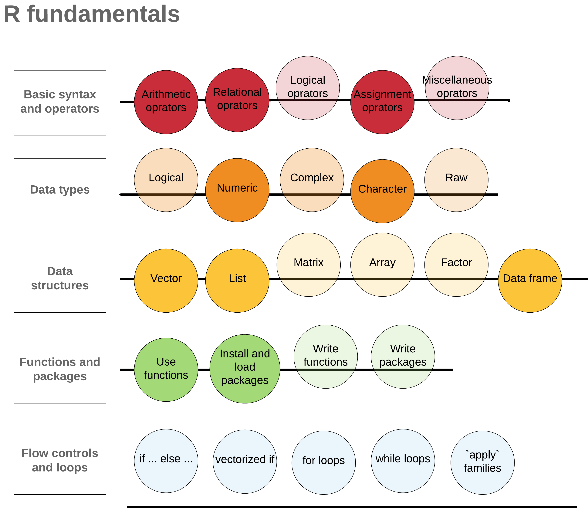

R Basic Tutorial
Author: Jia Liu
Date: 03/26/2021
1 Get familiar with Rstudio
1.1 About Rstudio
Let’s assume that you have R and Rstudio installed on your computer, and you have downloaded the GitHub Repository of this workshop.
Please do the following steps to open the workshop R package in your Rstudio:
Navigate to the downloaded “2021_Spring_R_Basic_Workshop” directory on your computer
Right click on the file “2021_Spring_R_Basic_Workshop.Rproj” > Open With > RStudio
A general Rstudio interface may look like this:

Panel 1: create and edit your R script, R markdown, or other files. (To create a new file: File > New File > select the type of file of interest)
Panel 2: typing R commands
Panel 3: check the R objects or variables you’ve created in Environment, and the previous R commands in History
Panel 4: Files list the files in your working directory; Plots show the plots you created; Packages show the available external R packages
1.2 Get and set working directory
You can know where your current working directory is by:
getwd()## [1] "/Users/liujia/Documents/R_projects/R_basic_tutorial_2021Mar"You can set your working directory to your preferred folder by:
an R command:
For mac and linux:
setwd("path/to/your/folder")For windows, your command might be:
setwd("C:/Users/path/to/working/directory")
clicking Session > Set Working Directory > Choose Directory …
2 Data types and Operators
2.1 Numeric
Numeric values may look like \(200\) or \(3.8\). Integer and double (floating point numbers) are two most common numerical types.
1. Create a numerical variable
You can create a variable with a numerical value by = or <-:
a = 10
print(a)## [1] 10Let’s create a variable b with a double typed value this time:
b <- 8.4
print(b)## [1] 8.4c <- b + 2
print(c)## [1] 10.42. Do arithmetic operations on numerical variables
Arithmetic operators in R works as the normal mathematic operators and follow the order of operations/calculations.
20 * 4 + 1## [1] 81Just as in mathematics operations, parentheses () can be used to change the order of operations.
20 * (4 + 1)## [1] 100Arithmetic operators:
| Mathematics operators | R arithmetic operators | Descriptions |
|---|---|---|
| a + b | a + b | a plus b |
| a - b | a - b | a minus b |
| a \(\times\) b | a * b | a multiply b |
| a \(\div\) b | a / b | a divided by b |
| a \(\%\) b | a %% b | remainder of a divided by b |
| \(a ^ b\) | a ^ b | a raised to the bth power |
Assignment operators:
We used = and <- to assign values to variables. They seem to work similar, but there are some slight differences. In general, <- is more often used when assigning a value to a variable. We can assign value (does not have to be numerical value) to variable with assignment operator <-:
x <- "8"
print(x)## [1] "8"Shortcut for assignment operator:
- In Windows:
Alt+-
- In Mac:
Option+-
See more keyboard shortcuts for Rstudio.
2.2 Character
Some examples of Character type can be: ‘this’, “me”, “29.9”, ‘FALSE’. The x variable we just created is a character variable. How do I know that?
1. Check the type of a variable
We can check the type of a variable with typeof() function:
print(x)## [1] "8"typeof(x)## [1] "character"Normally, a value within two single quotes or double quotes ('char' or "I am a character") has type of character.
2. Concatenate multiple characters
What if I want to concatenate two characters? Let’s try the + operator:
x + "is my lucky number."## Error in x + "is my lucky number.": non-numeric argument to binary operatorIt seems that the + operator does not work for character type. There is a function paste that concatenate characters:
paste(x, "is my lucky number.")## [1] "8 is my lucky number."3. Change data type of a variable
x has value “8” and character type, I guess we cannot do mathematics operations on it based on our experience:
x + 2## Error in x + 2: non-numeric argument to binary operatorThen what if we change its type to numeric so that we can do arithmetic operation on x? as.numeric() function will do that:
y <- as.numeric(x)
print(y)## [1] 8typeof(y)## [1] "double"as.datatype() functions can change the data type of a variable or value, for example, we can use as.character() to change other types of values to character.
as.character(y)## [1] "8"SUMMARY
We just went through two basic data types (numeric and character) and two operators (arithmetic and assignment). There are more useful data types and operators that we may or may not go through in the next. See more resources about data types and operators.
2.2.1 Exercise
A is a circle with radius \(r = 3\). Calculate the area of A and store the result in variable
area_A. (Hint: \(\pi\) value is a built-in value in R, and it is stored in variablepi)You can see that the data type of
area_Ais “double” bytypeof(area_A). Change the type ofarea_Ato “character”.
Solution:
area_A <- pi * 3^2area_A <- as.character(area_A)
3 Data structure
Some frequently used R-objects / data structures are: “Vectors”, “Lists”, “Matrices”, “Arrays”, “Factors”, and “Data frames”.
3.1 Vector
Vector is probably the most commonly used data structure in R.
1. Create or add to a vector
You can create a vector with c() function:
nu <- c(1, 2, 3)
print(nu)## [1] 1 2 3typeof(nu)## [1] "double"Not just numeric vectors, you can also create a character vector:
ch <- c("hi", "what's up", "hey")
print(ch)## [1] "hi" "what's up" "hey"typeof(ch)## [1] "character"or logical vector:
lo <- c(TRUE, FALSE, T)
print(lo)## [1] TRUE FALSE TRUEtypeof(lo)## [1] "logical"Logical is another data type in R. Its value can be:
TRUE,T,FALSE,F. Logical type is case sensitive.falseis not a logical type.
c() can also be used to add elements to existing vectors:
nu <- c(nu, 100, 808)
print(nu)## [1] 1 2 3 100 808or
ch <- c("hello", ch)
print(ch)## [1] "hello" "hi" "what's up" "hey"There are many other ways to create vectors, such as:
z <- 1:10
print(z)## [1] 1 2 3 4 5 6 7 8 9 102. Operate on vectors
Do arithmetic operations on vectors:
ve <- c(2, 4, 3)
ve / 2## [1] 1.0 2.0 1.5ve + c(1, 2, 3)## [1] 3 6 6Apply some other functions to a vector:
print(ch)## [1] "hello" "hi" "what's up" "hey"paste(ch, "there")## [1] "hello there" "hi there" "what's up there" "hey there"Get the length of a vector using length() function:
length(ch)## [1] 4SUMMARY
- About
vector:
- Vectors are in one dimensional
- All the elements within one vector needs to be of the same data type
- The operation that is applied to a vector will be applied to each element
matrixcan be described as an extension ofvectorfrom one dimensional to two dimensional.matrixis rectangular data and the elements within a matrix need to be of the same type.Arrayis similar asmatrix, but can be in more dimensions.
Learn more here.
3.1.1 Exercise
- Assign
c(15, 256, 11)to variablenum
- Check if each number in
numis odd
Solution:
num <- c(15, 256, 11)num %% 2
3.2 List
The “vector - matrix - array” data structure series are awesome, but they contain elements with only the same data type. Now we will learn about “list”, where one list can contain elements in different data types, including lists:
li <- list(TRUE, 28, "haha", F)
li## [[1]]
## [1] TRUE
##
## [[2]]
## [1] 28
##
## [[3]]
## [1] "haha"
##
## [[4]]
## [1] FALSEGet the number of elements in a list by length again:
length(li)## [1] 43.3 Data frame
Consider data frame as a list of vectors with equal length. Different vector can have different data type.
Create a data frame by data.frame function:
animal <- c("cat", "zebra", "turtle", "chicken")
leg <- c(4, 4, 4, 2)
mammal <- c(TRUE, TRUE, FALSE, FALSE)
df <- data.frame(animal, leg, mammal)
df## animal leg mammal
## 1 cat 4 TRUE
## 2 zebra 4 TRUE
## 3 turtle 4 FALSE
## 4 chicken 2 FALSEA lot of data set that you will be working with in R are probably of data frame type. R provides some built-in data set that you can play with. List the pre-loaded data set by data():
data()mtcars is a data set comprises 11 aspects of automobile information for 32 automobiles. Load the mtcars:
# loading
data("mtcars")The following commands will give us a very basic description about the data frame:
While typeof() tells the internal data type or storage mode of an object (lower level), class() returns the classes of the object (higher level):
typeof(mtcars)## [1] "list"class(mtcars)## [1] "data.frame"We can check the first several rows of a data frame by:
head(mtcars)## mpg cyl disp hp drat wt qsec vs am gear carb
## Mazda RX4 21.0 6 160 110 3.90 2.620 16.46 0 1 4 4
## Mazda RX4 Wag 21.0 6 160 110 3.90 2.875 17.02 0 1 4 4
## Datsun 710 22.8 4 108 93 3.85 2.320 18.61 1 1 4 1
## Hornet 4 Drive 21.4 6 258 110 3.08 3.215 19.44 1 0 3 1
## Hornet Sportabout 18.7 8 360 175 3.15 3.440 17.02 0 0 3 2
## Valiant 18.1 6 225 105 2.76 3.460 20.22 1 0 3 1or the last several rows of a dataframe by:
tail(mtcars)## mpg cyl disp hp drat wt qsec vs am gear carb
## Porsche 914-2 26.0 4 120.3 91 4.43 2.140 16.7 0 1 5 2
## Lotus Europa 30.4 4 95.1 113 3.77 1.513 16.9 1 1 5 2
## Ford Pantera L 15.8 8 351.0 264 4.22 3.170 14.5 0 1 5 4
## Ferrari Dino 19.7 6 145.0 175 3.62 2.770 15.5 0 1 5 6
## Maserati Bora 15.0 8 301.0 335 3.54 3.570 14.6 0 1 5 8
## Volvo 142E 21.4 4 121.0 109 4.11 2.780 18.6 1 1 4 2or the dimension of a data frame by:
dim(mtcars)## [1] 32 11nrow(mtcars)## [1] 32ncol(mtcars)## [1] 11or the names attribute for a data frame by:
names(mtcars)## [1] "mpg" "cyl" "disp" "hp" "drat" "wt" "qsec" "vs" "am" "gear" "carb"colnames(mtcars)## [1] "mpg" "cyl" "disp" "hp" "drat" "wt" "qsec" "vs" "am" "gear" "carb"some data sets may also have row names:
rownames(mtcars)## [1] "Mazda RX4" "Mazda RX4 Wag" "Datsun 710" "Hornet 4 Drive"
## [5] "Hornet Sportabout" "Valiant" "Duster 360" "Merc 240D"
## [9] "Merc 230" "Merc 280" "Merc 280C" "Merc 450SE"
## [13] "Merc 450SL" "Merc 450SLC" "Cadillac Fleetwood" "Lincoln Continental"
## [17] "Chrysler Imperial" "Fiat 128" "Honda Civic" "Toyota Corolla"
## [21] "Toyota Corona" "Dodge Challenger" "AMC Javelin" "Camaro Z28"
## [25] "Pontiac Firebird" "Fiat X1-9" "Porsche 914-2" "Lotus Europa"
## [29] "Ford Pantera L" "Ferrari Dino" "Maserati Bora" "Volvo 142E"3.4 Accessing elements in a data structure
1. Accessing elements in a vector using [index] or [index_start : index_end]
z <- c(100, 200, 300, 400)
z## [1] 100 200 300 400# access the third element in z
z[3]## [1] 300# access the second to forth elements in z
z[2:4]## [1] 200 300 4002. Accessing elements in a data frame
- Get specific columns:
You can get a specific column of a dataframe by df_name$colume_name`:
mtcars$mpgAccessing elements with
df_name[r_index, c_index]r_index/c_indexcan be row/column numbers or ranges. For example, get the element at row 3, column 6:
mtcars[3, 6]## [1] 2.32If you want to get specific row(s), then specify the row number(s) and leave the column part empty, df_name[r_index, ]. For example, you can get the first three rows by:
# return the first 3 rows
mtcars[1:3, ]If you just want to select specific column(s), then leave the row index empty, df_name[ , c_index]. Here you can get the column 4 to 8 by:
# return the last 5 columns
head(mtcars[ , 4:8])c_indexcan be column names.
mtcars[ , c("mpg", "gear")]r_indexcan be relational operator
We can get the rows of mtcars with mpg columns bigger than \(20\):
mtcars[mtcars$mpg > 20, ]Or we may only be interested in rows that gear equals to 4:
mtcars[mtcars$gear == 4, ]The symbol > and == we used above are so called “relational operator”. Normally a relational operator will return a logical type (TRUE / FALSE) based on the relationship between its left and right side. Then the outer part of the code, if there’s any, will decide what to do based on the logical type.
Relational operator
==: checks if the left side values equal to that of the right side. So in the example above, for each row, if itsPollutantvalue is “CO2”, the row will be filtered as one of the output.>: greater than<:less than<=: less than or equal to>=: greater than or equal to!=: unequal to
What about if I am interested with the data of both mtcars$mpg > 20 and mtcars$gear == 4?
You can include both two conditions with & (AND):
mtcars[mtcars$mpg > 20 & mtcars$gear == 4, ]The | (OR) operator returns true if its left side or right side is true. For example, we can get all the rows of cyl equals to \(6\) or \(8\) by:
mtcars[mtcars$cyl == 6 | mtcars$cyl == 8, ]The & and | we just saw are two logical operators.
Logical operator
!x: NOT xx | y: x OR yx & y: x AND y
SUMMARY
R’s basic subsetting is powerful. It allows you to adopt different methods, such as relational and logical operators to extract the useful information from a data set. I am including some good online resources here about subsetting: Everything I know about R subsetting, and subsetting in the book Advanced R.
There are other useful packages and functions to subset data frames, for example tidyverse. You will learn more about it in the R advanced workshop.
3.4.1 Exercise
- Get the rows of which
cylequals to \(4\) andhpcolumn bigger or equal to \(110\) frommtcarsdata frame
Solution:
mtcars[mtcars$cyl == 4 & mtcars$hp >= 110, ]## mpg cyl disp hp drat wt qsec vs am gear carb
## Lotus Europa 30.4 4 95.1 113 3.77 1.513 16.9 1 1 5 24 Functions and Packages
4.1 Functions
The base R has many useful built-in functions that maybe helpful to your data. The normal syntax of using a function is as such: function_name(argument 1, argument 2, ...)
printcan be used to display information
h <- c(8, 2, 5.5)
print(h)## [1] 8.0 2.0 5.5sort: Order a vector in ascending or descending order.
# function name: sort; argument: y
sort(h)## [1] 2.0 5.5 8.0We just sorted a vector in ascending order, but how to do it in descending order? How to get all the arguments info of a function and learn how to use a function?
- Normally, you can find the detailed description, usage, and arguments information in the function/package R documentation. Search the R Documentation by
?function_nameor search R help files with a word or phrase by??regresion:
?sort
# sort vector y in descending order
sort(h, decreasing = TRUE)## [1] 8.0 5.5 2.0??regresion- The second way is just to Google!
4.2 Packages
Sometimes the functions you want to use may not be included in base R, but instead in a specific R package. That’s when we need to install the package.
tidyverse is a collection of R packages that is being widely used in data science area.
# install the package
install.packages("tidyverse")
# load the add-on package
library(tidyverse)There are a lot of existing functions and packages that may be helpful for your analysis. But if your work needs some very specific functions or the same chunk of code is reused multiple times, it’s always a good idea to write your own functions or even packages!
4.3 Create a function
The structure of a R function is as shown below:
function_name <- function(argument1, argument2, ... ) {
statements
return(object)
}Here we will try to define a simple function f_to_c that converts temperatures from Fahrenheit to Celsius:
f_to_c <- function(temp_in_F) {
temp_in_C <- (temp_in_F - 32) * 5 / 9
return(temp_in_C)
}Now we can convert temperature in Fahrenheit to Celsius with f_to_c. For example, temperature of 100 in Fahrenheit is:
f_to_c(100)## [1] 37.77778SUMMARY
Now you probably have an idea about how to use functions, packages, and how to create a simple R function.
See more resources of creating functions and your own R package.
5 Summary
Let’s have a look at the “big picture” again:

We put some beads onto several threads, and there is always more to self educate yourself about. Notice that you don’t need to wait until being familiar with all the R basics to use R in your research or data analysis. You will keep learning and building your fundamentals while using R. Hope the R advanced workshop can give you some ideas about how to use R to explore your data.